-
1Navigate to https://xbo.xenial.com/login
-
2Click "Log In"
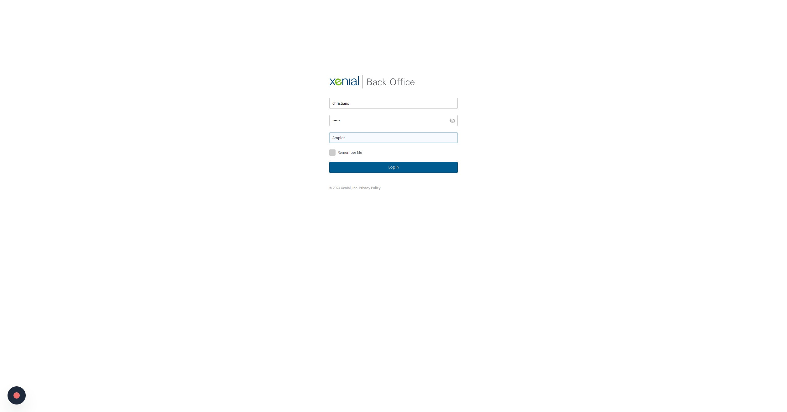
-
3Click here.
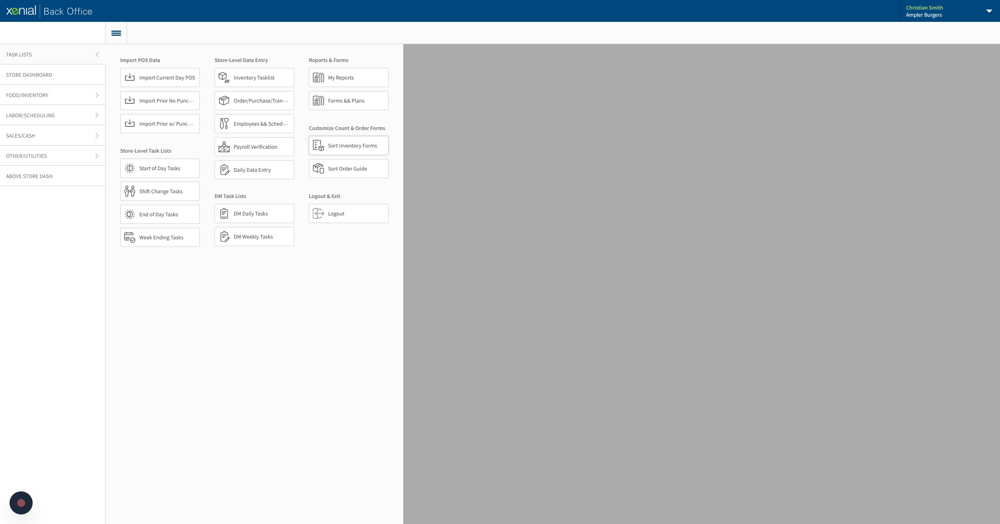
-
4Select the store you are adjusting. Restaurant accounts will only see their restaurant.
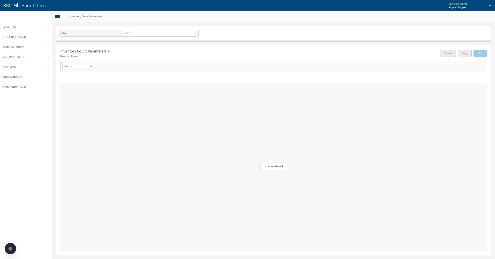
Add/Remove- Weekly Counts
-
5Search the item you are adding or removing.
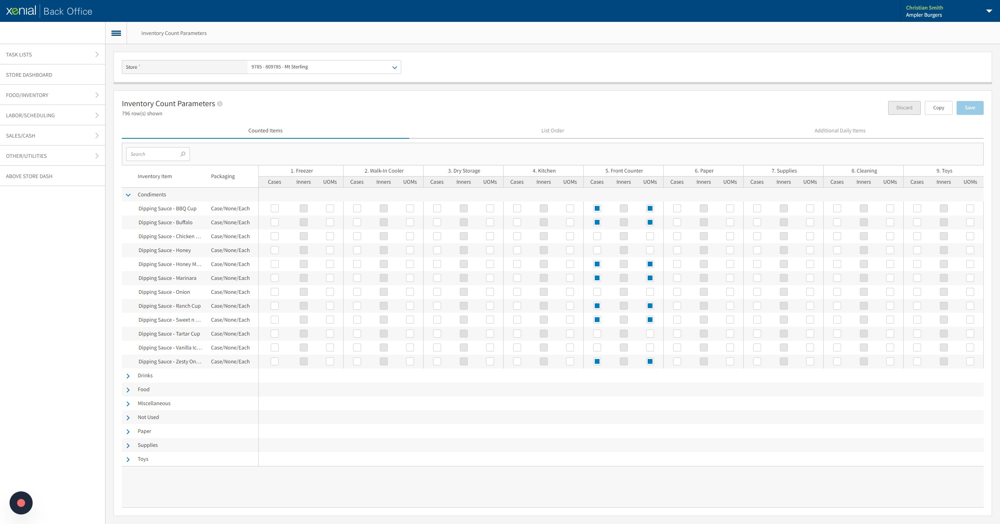
-
6Click the box for UOM you want counted in the area you want it on the count sheet form. Uncheck the box to remove the item.
-
7Click "Save"
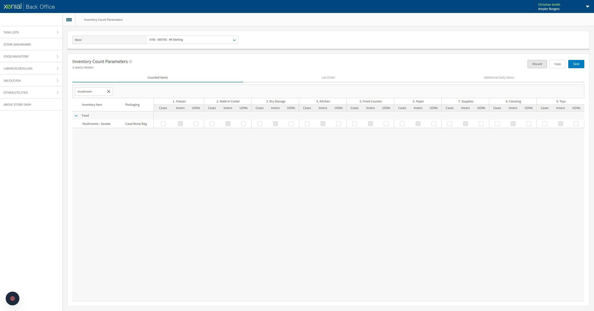
Add/Remove- Daily Counts
-
8Click "Additional Daily Items"
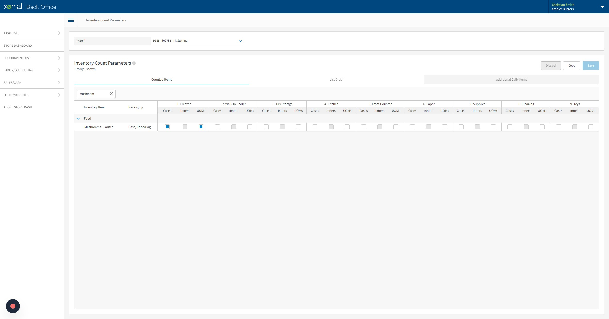
-
9Search the item you are adding or removing.
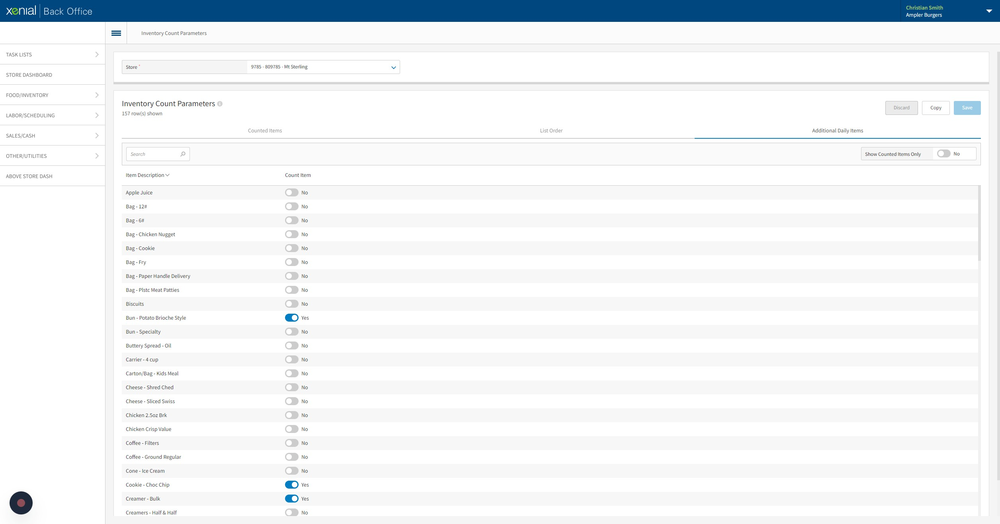
-
10Click the switch for the item you want counted. Uncheck the box to remove the item.
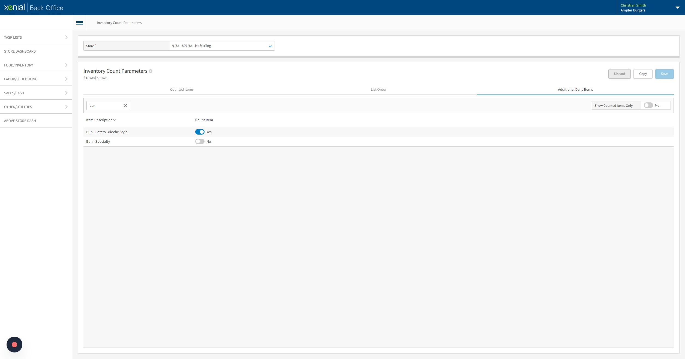
-
11Click "Save"
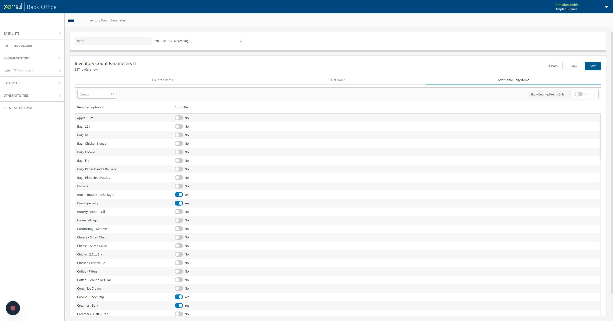
Sorting Forms
-
12Click "List Order"
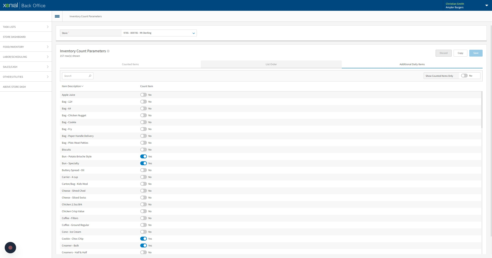
-
13Click the "Locations" field to switch between sections of the sheet.
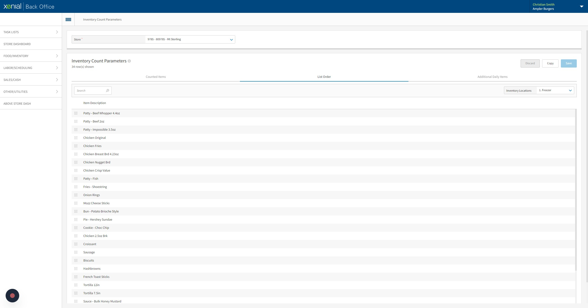
-
14Drag the items in the order you want them displayed.
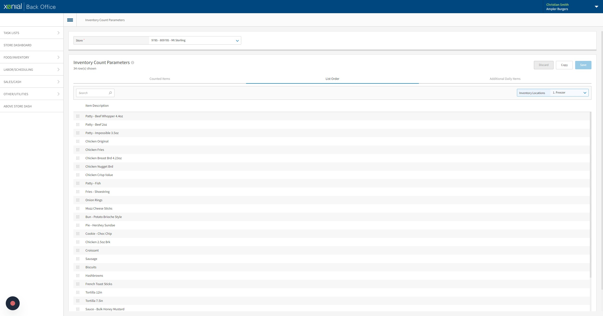
-
15Click "Save"
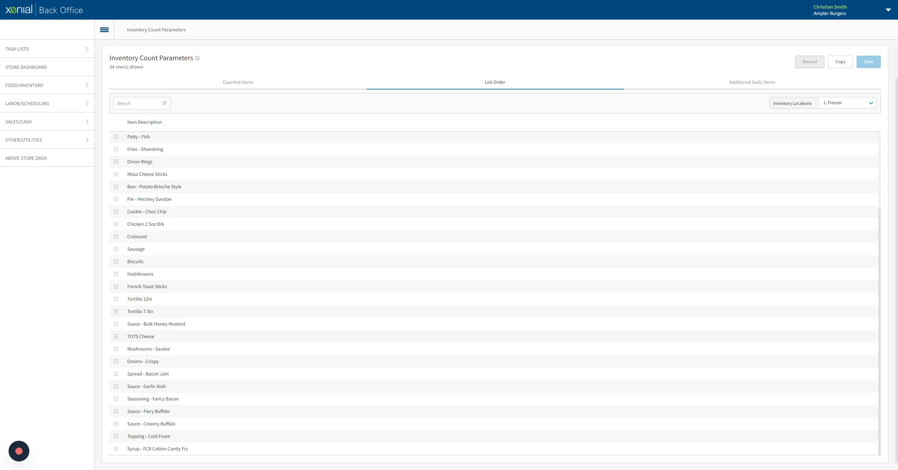